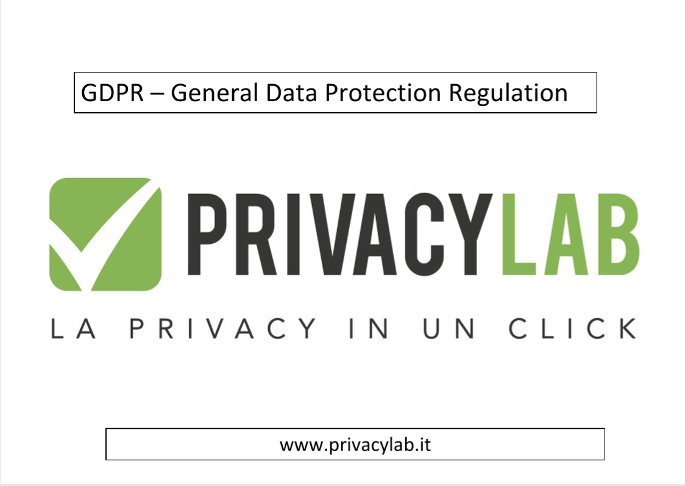

Introduzione
il secondo progetto svolto riguardava la privacy e le politiche delle
aziende riguardo al trattamento dei dati sensibili, in particolare e’
stato messo il focus sulla nuova normativa europea che uscira’ a maggio(GDPR).
Ci e' stato presentato il profilo lavorativo del DPO (data protection officer)
e del responsabile della protezione dati, tutta la presentazione e' stata
accompagnata da delle slide, ecco il link per scaricarle:
Download.
Il progetto e’ stato presentato da Roberto Ghinolfi, socio di
PrivacyLab

consisteva nel simulare una consulenza di auditing, in cui il consulente
verificava le policy delle aziende riguardanti i dati sensibili.
Eravamo divisi in 4 grandi gruppi. All’interno del gruppo poi si divideva
un’altro gruppo di persone che avrebbe fatto l’agenzia di auditing mentre
le restanti avrebbero rappresentato l’azienda.
Il 16 gennaio, al termine del progetto si doveva esporre una relazione
scritta dalla compagnia di auditing riguardante la policy delle azienda
ascoltata.
Il nostro team
io ero in gruppo con 8 persone della mia classe, e io rappresentavo
il vertice dell’azienda che faceva uso dei dati sensibili.
Il nome che avevamo inventato per l'azienda era CC Data s.r.l, abbiamo cosi’
esposto le nostre politiche all’agenzia di auditing che ha redatto
una relazione abbastanza positiva, qui di seguito e' presente il link
per scaricarla:
download relazione
All'interno del team alcuni si sono occupati di creare delle
politiche in linea con la nuova legge GDPR mentre alcuni controllavano
le politiche di aziende come la nostra
L'esperienza di Auditing
abbiamo presentato come secondo gruppo, io personalmente ero colui che rispondeva a tutte le domande rivoltemi dalla compagnia di consulenza, queste di seguito sono le slide riguardanti le nostre politiche e la relazione. Le tematiche trattate erano queste : Condizione cookies, Trattamento dei dati e Gestione pagamenti, tematiche che erano fondamentali per il nostro tipo di azienda. La nostra sessione di Auditing era risultata piuttosto buona secondo Ghinolfi, in quanto avevamo pensato ad ogni possibile problema riguardante i dati sensibili.
Conclusione
l’ho trovato un progetto dasvvero utile utile ed interessante, soprattutto perche’ non ero minimamente a conoscenza di questone settore lavorativo riguardante aziende specifiche, come PrivacyLba stessa, che tramite consulenze trattano la parte relativa alla privacy e ai dati sensibili. simile, e di quanto fossero meticolose le politiche delle aziende riguardo all’uso dei dati degli utenti